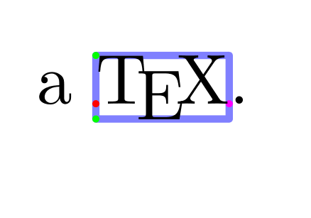
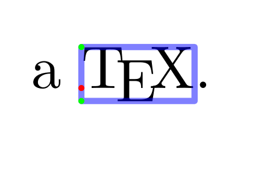
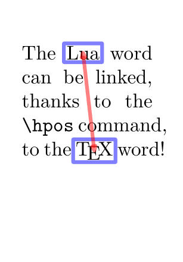
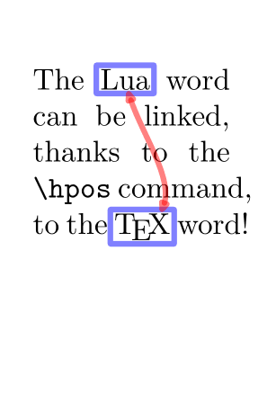
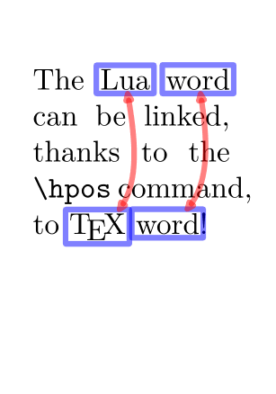
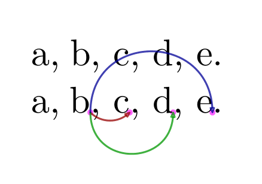
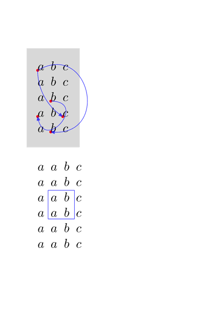
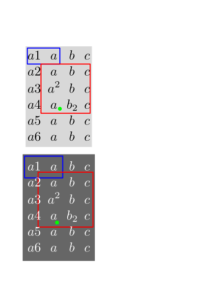

Contents
How to identify and use the position of content on the page
Here are first commands (anch-pos.mkiv):
- \xypos simple position with no dimensions
- \hpos position and characteristics of a \hbox
- \vpos position and characteristics of a \vbox
- \bpos begin point in a line
- \epos end point in a line
Here is an example where
-
in the text we locate a segment of text on the content with
\hpos
{locA}{…
},
locAbeing the chosen label -
\startuseMPgraphic
is used to prepare a graphic to be used as an overlay of the page. In this graphic, we use several ConTeXt's commands
- \MPll {locA } to access to the Lower Left corner of the segment of text. We also use \MPlr {locA } \MPur {locA } \MPul {locA } to draw the complete box.
- \MPx {locA } and \MPx {locA } to locate the baseline entry point
- \MPd {locA } and \MPh {locA } to also locate the point the depth below the entry point, and the point the height above the entry point (depth means depth of the segment of text, and height means height of the segment of text).
- \MPw {locA } provides the width of the segment of text.
-
\setupheadertexts[] \setuppapersize[A8,landscape] \setupbodyfont[48pt] \startuseMPgraphic{MPMyPage} StartPage ; draw \MPll{locA} -- \MPlr{locA} -- \MPur{locA} -- \MPul{locA} -- cycle withpen pencircle scaled 5pt withcolor transparent(1,0.5,blue); draw (\MPx{locA},\MPy{locA}) withpen pencircle scaled 5pt withcolor red ; draw (\MPx{locA},\MPy{locA} - \MPd{locA}) withpen pencircle scaled 5pt withcolor green; draw (\MPx{locA},\MPy{locA} + \MPh{locA}) withpen pencircle scaled 5pt withcolor green; draw (\MPx{locA} + \MPw{locA},\MPy{locA}) withpen pencircle scaled 5pt withcolor magenta ; StopPage ; \stopuseMPgraphic \defineoverlay [OLMyPage] [\useMPgraphic{MPMyPage}] \setupbackgrounds [page] [background=OLMyPage] \starttext a \hpos{locA}{\TeX}. \stoptext
- 
LuaMetaFun version
With MetaPost commands
- positionbox("label")
- positionxy("label")
-
positionwhd("label") associated with
- dppart
- htpart
- wdpart (but issue currently)
And you can also replace \hpos{locA} by a region=locA parameter.
-
\setupheadertexts[] \setuppapersize[A8,landscape] \setupbodyfont[48pt] \startuseMPgraphic{MPMyPage} StartPage ; draw positionbox("locA") withpen pencircle scaled 5pt withcolor transparent(1,0.5,blue); draw positionxy("locA") withpen pencircle scaled 5pt withcolor red ; draw (positionx("locA"), positiony("locA") - (dppart positionwhd("locA"))) withpen pencircle scaled 5pt withcolor green; draw (positionx("locA"), positiony("locA") + (htpart positionwhd("locA"))) withpen pencircle scaled 5pt withcolor green; StopPage ; \stopuseMPgraphic \defineoverlay [OLMyPage] [\useMPgraphic{MPMyPage}] \setupbackgrounds [page] [background={foreground,OLMyPage}] \starttext a \framed [region=locA, offset=overlay, frame=off]{\TeX}. % a \hpos{locA}{\TeX}. \stoptext
- 
How to draw links between words on the page
-
\setupheadertexts[] \setuppapersize[A8] \setupbodyfont[16pt] \setupalign[tolerant] \startuseMPgraphic{MPMyPage} StartPage ; path pa, pb; pa := (\MPll{locA} -- \MPlr{locA} -- \MPur{locA} -- \MPul{locA} -- cycle) enlarged 2pt; pb := (\MPll{locB} -- \MPlr{locB} -- \MPur{locB} -- \MPul{locB} -- cycle) enlarged 2pt; draw pa withpen pencircle scaled 3pt withcolor transparent(1,0.5,blue); draw pb withpen pencircle scaled 3pt withcolor transparent(1,0.5,blue); drawdblarrow (center pa) .. (center pb) withpen pencircle scaled 3pt withcolor transparent(1,0.5,red); StopPage ; \stopuseMPgraphic \defineoverlay [OLMyPage] [\useMPgraphic{MPMyPage}] \setupbackgrounds [page] [background={foreground,OLMyPage}] % HERE overlay over the foreground. \starttext The \hpos{locA}{\LUA} word can be linked, thanks to the \tex{hpos} command, to the \hpos{locB}{\TeX} word! \stoptext
- 
The drawing of the arrow can be slightly improved
-
\setupheadertexts[] \setuppapersize[A8] \setupbodyfont[16pt] \setupalign[tolerant] \startuseMPgraphic{MPMyPage} StartPage ; path pa, pb, pab; pa := (\MPll{locA} -- \MPlr{locA} -- \MPur{locA} -- \MPul{locA} -- cycle) enlarged 2pt; pb := (\MPll{locB} -- \MPlr{locB} -- \MPur{locB} -- \MPul{locB} -- cycle) enlarged 2pt; pab := (center pa){dir(-80)} .. (center pb){dir(-155)}; draw pa withpen pencircle scaled 3pt withcolor transparent(1,0.5,blue); draw pb withpen pencircle scaled 3pt withcolor transparent(1,0.5,blue); pab := pab cutbefore (pab intersectionpoint pa) ; pab := pab cutafter (pab intersectionpoint pb) ; drawdblarrow pab withpen pencircle scaled 3pt withcolor transparent(1,0.5,red); StopPage ; \stopuseMPgraphic \defineoverlay [OLMyPage] [\useMPgraphic{MPMyPage}] \setupbackgrounds [page] [background={foreground,OLMyPage}] \starttext The \hpos{locA}{\LUA} word can be linked, thanks to the \tex{hpos} command, to the \hpos{locB}{\TeX} word! \stoptext
- 
Generalise to several pairs of words
-
MetaPost side
- \startMPpositiongraphic (you don't need StartPage)
- \MPvar to access the parameters of the \setMPpositiongraphic command
- \setMPpositiongraphic to pass the parameters to \startMPpositiongraphic
- Overlay side
-
\setupheadertexts[] \setuppapersize[A8] \setupbodyfont[16pt] \setupalign[tolerant] \startMPpositiongraphic{MPMyPage} StartPage ; path pa, pb, pab; pa := (\MPll{\MPvar{from}} -- \MPlr{\MPvar{from}} -- \MPur{\MPvar{from}} -- \MPul{\MPvar{from}} -- cycle) enlarged 2pt; pb := (\MPll{\MPvar{to}} -- \MPlr{\MPvar{to}} -- \MPur{\MPvar{to}} -- \MPul{\MPvar{to}} -- cycle) enlarged 2pt; pab := (center pa){dir(-80)} .. (center pb){dir(-155)}; draw pa withpen pencircle scaled 3pt withcolor transparent(1,0.5,blue); draw pb withpen pencircle scaled 3pt withcolor transparent(1,0.5,blue); pab := pab cutbefore (pab intersectionpoint pa) ; pab := pab cutafter (pab intersectionpoint pb) ; drawdblarrow pab withpen pencircle scaled 3pt withcolor transparent(1,0.5,red); StopPage ; \stopMPpositiongraphic \startpositionoverlay{POLarrows} \setMPpositiongraphic{locA}{MPMyPage}{to=locB} \setMPpositiongraphic{locC}{MPMyPage}{to=locD} \stoppositionoverlay \defineoverlay[OLMyPage][\positionoverlay{POLarrows}] \setupbackgrounds [page] [background={foreground,OLMyPage}] \starttext The \hpos{locA}{\LUA} \hpos{locC}{word} can be linked, thanks to the \tex{hpos} command, to \hpos{locB}{\TeX} \hpos{locD}{word}! \stoptext
- 
Anchors within frames
Anchors allows to work with positioning of specif points within a frame. You can use anchors with the following commands:
- in the content: \markanchor {label}{numberA}{numberB }. You can just use numberA numberB as zero, but it can be useful, for one same label, to also have two figures to refer to others anchors with the same label but with different 2D positions).
-
in MetaPost:
anchorxy("label", numberA, numberB). - for the frame using the MetaPost graphic as an overlay: \framed [synchronize=yes,background={…}] , synchronize being needed to update the positions of the anchors at each run.
-
\setupheadertexts[] \setuppapersize[A8,landscape] \setupbodyfont[30pt] \startuseMPgraphic{MPpoints} pickup pencircle scaled 5pt ; color mycolor; mycolor := magenta ; draw anchorxy("one", 0, 1) withcolor mycolor withtransparency (1,.6); draw anchorxy("one", 0, 2) withcolor mycolor withtransparency (1,.6); draw anchorxy("one", 0, 3) withcolor mycolor withtransparency (1,.6); draw anchorxy("two", 0, 1) withcolor mycolor withtransparency (1,.6); setbounds currentpicture to OverlayBox ; \stopuseMPgraphic \startuseMPgraphic{MParrows} pickup pencircle scaled 1.5pt ; drawarrow anchorxy("one", 0, 1) {dir -45} .. anchorxy("one", 0, 2) withcolor "darkred" withtransparency (1,.75) ; drawarrow anchorxy("one", 0, 1) {down} .. anchorxy("one", 0, 3) withcolor "darkgreen" withtransparency (1,.75) ; drawarrow anchorxy("one", 0, 1) {up} .. anchorxy("two", 0, 1) withcolor "darkblue" withtransparency (1,.75) ; setbounds currentpicture to OverlayBox ; \stopuseMPgraphic \defineoverlay [OLback] [\useMPgraphic{MPpoints}] \defineoverlay [OLfront] [\useMPgraphic{MParrows}] \setupframed [offset=0pt, strut=yes, location=top, frame=off] \starttext a, \framed{b, c, d, e.} a, \framed[synchronize=yes, background={OLback,foreground,OLfront}] {b\markanchor{one}{0}{1}, c\markanchor{one}{0}{2}, d\markanchor{one}{0}{3}, e\markanchor{two}{0}{1}.} \stoptext
- 
With matrices - example 1
-
\setupheadertexts[] \setuppapersize[A7] \setupbodyfont[12pt] \starttext \startuseMPgraphic{whatever-1} fill OverlayBox withcolor "lightgray" ; drawdot anchorxy("one", 0, 1) withpen pencircle scaled 1mm withcolor "red" ; drawdot anchorxy("one", 0, 2) withpen pencircle scaled 1mm withcolor "red" ; drawdot anchorxy("two", 0, 1) withpen pencircle scaled 1mm withcolor "red" ; drawdot anchorxy("two", 0, 2) withpen pencircle scaled 1mm withcolor "red" ; drawdot anchorxy("three", 0, 1) withpen pencircle scaled 1mm withcolor "red" ; setbounds currentpicture to OverlayBox ; \stopuseMPgraphic \startuseMPgraphic{whatever-2} pair a ; a := anchorxy("one", 0, 1) ; pair b ; b := anchorxy("one", 0, 2) ; drawarrow anchorxy("one", 0, 1) { right } .. anchorxy("one", 0, 2) withcolor "blue" withtransparency (1,.75) ; drawarrow anchorxy("two", 0, 1) { down } .. anchorxy("two", 0, 2) withcolor "blue" withtransparency (1,.75) ; drawarrow anchorxy("two", 0, 1) { dir 30 } .. anchorxy("three", 0, 1) withcolor "blue" withtransparency (1,.75) ; setbounds currentpicture to OverlayBox ; \stopuseMPgraphic \defineoverlay[whatever-1][\useMPgraphic{whatever-1}] \defineoverlay[whatever-2][\useMPgraphic{whatever-2}] \framed [synchronize=yes, align=normal, offset=10pt, frame=off, background={whatever-1,foreground,whatever-2}] {\startmathmatrix \NC \markanchor{two}{0}{1}a \NC b \NC c \NR \NC a \NC b \NC c \NR \NC a \NC \markanchor{one}{0}{1}b \NC c \NR \NC \markanchor{one}{0}{2}a \NC b \NC \markanchor{two}{0}{2}c \NR \NC a \NC \markanchor{three}{0}{1}b \NC c \NR \stopmathmatrix} \startuseMPgraphic{whatever-3} pair a ; a := anchorxy("a", 0, 1) ; pair b ; b := anchorxy("a", 0, 2) ; draw boundingbox (a--b) leftenlarged .25EmWidth rightenlarged EmWidth topenlarged StrutHeight bottomenlarged .5StrutDepth withcolor "blue" withtransparency (1,.75) ; setbounds currentpicture to OverlayBox ; \stopuseMPgraphic \defineoverlay[whatever-3][\useMPgraphic{whatever-3}] \framed [synchronize=yes, align=normal, offset=10pt, frame=off, background=whatever-3] {\startmathmatrix \NC a \NC a \NC b \NC c\NR \NC a \NC a \NC b \NC c\NR \NC a \NC \markanchor{a}{0}{1}a \NC b \NC c\NR \NC a \NC a \NC \markanchor{a}{0}{2} b \NC c\NR \NC a \NC a \NC b \NC c\NR \NC a \NC a \NC b \NC c\NR \stopmathmatrix} \stoptext
- 
With matrices - example 2
-
\setupheadertexts[] \setuppapersize[A7] \setupbodyfont[13pt] \starttext \startuseMPgraphic{whatever-5} fill OverlayBox withcolor "lightgray" ; draw matrixbox (1, 1) (2, 1) withpen pencircle scaled 1pt withcolor "blue" ; draw matrixbox (2, 2) (4, 4) withpen pencircle scaled 1pt withcolor "red" ; draw anchorxy("matrix", 3, 4) withpen pencircle scaled 4pt withcolor "green"; setbounds currentpicture to OverlayBox ; \stopuseMPgraphic \defineoverlay[whatever-5][\useMPgraphic{whatever-5}] \framed [synchronize=background, align=normal, frame=off, background=whatever-5] {\setmathmatrixanchoring[both]% left|right|both|yes % {\setmathmatrixanchoring[right]% left|right|both|yes \startmathmatrix \NC a1 \NC a \NC b \NC c\NR \NC a2 \NC a \NC b \NC c\NR \NC a3 \NC a^2 \NC b \NC c\NR \NC a4 \NC a \NC b_2 \NC c\NR \NC a5 \NC a \NC b \NC c\NR \NC a6 \NC a \NC b \NC c\NR \stopmathmatrix} \startuseMPgraphic{whatever-5} fill OverlayBox withcolor "darkgray" ; draw matrixbox (1, 1) (2, 1) enlarged OverlayOffset shifted paired(OverlayOffset) withpen pencircle scaled 1pt withcolor "blue" ; draw matrixbox (2, 2) (4, 4) enlarged OverlayOffset shifted paired(OverlayOffset) withpen pencircle scaled 1pt withcolor "red" ; draw anchorxy("matrix", 3, 4) withpen pencircle scaled 4pt withcolor "green"; setbounds currentpicture to OverlayBox ; \stopuseMPgraphic \blank \framed [synchronize=background, align=normal, frame=off, background=whatever-5, backgroundoffset=.5ex, foregroundcolor=white] {\setmathmatrixanchoring[yes]% left|right|both|yes \startmathmatrix \NC a1 \NC a \NC b \NC c\NR \NC a2 \NC a \NC b \NC c\NR \NC a3 \NC a^2 \NC b \NC c\NR \NC a4 \NC a \NC b_2 \NC c\NR \NC a5 \NC a \NC b \NC c\NR \NC a6 \NC a \NC b \NC c\NR \stopmathmatrix} \stoptext
- 
See also
- MetaFun reference manual, 5. Positional graphics .
- LuaMetaFun reference manual, 23.8.3 Positions .
- on ntg-context@ntg.nl new upload May 2021.